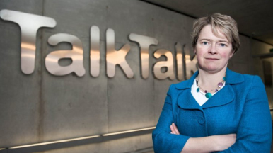

<!DOCTYPE html>
<html>
  <head>
    <meta charset="utf-8">
    <meta http-equiv="X-UA-Compatible" content="IE=edge">
    <meta name="viewport" content="width=device-width, initial-scale=1">
    <meta name="description" content="Cyber Security">
    <meta name="author" content="Vinciworks">
    <title>Cyber Security  - in_the_news</title>
    <link rel="stylesheet" href="css/style.css" type="text/css" media="all"><!--[if IE 9]>
    <link rel="stylesheet" href="css/ie9.css" type="text/css" media="all"><![endif]-->
    <script src="js/jquery-2.2.4.min.js"></script>
  </head>
</html>
<body class="in_the_news">
  <div class="container">
    <div class="device">
      <div class="screen-background">
        <div class="screen scroll animated zoomIn">
          <div class="app-content">
            <h1>TalkTalk security breach</h1>
            <div class="by">BY&nbsp;<span class="name">JUDI SREBERO</span>&nbsp;11:00AM, SEPTEMBER 20, 2016</div>
            <figure>
              <figcaption>TalkTalk CEO Dido Harding admits she doesn't know if customer bank details were encrypted</figcaption>
            </figure>
            <p>UK telecommunications company Talk Talk suffered a cyber security breach in October 2015 which may have cost the company over £60 million. Customers whose information was compromised number roughly 157,000. The company lost over 100,000 customers as a result.</p>
            <p>Watch: Talk Talk CEO Dido Harding brief the public in the aftermath of the cyber attack.</p>
            <p>http://www.thisismoney.co.uk/money/markets/article-3313386/TalkTalk-gives-customers-free-upgrade-extra-TV-channels-mobile-package.html#v-4574573617001</p>
            <p>The case has positioned the need for cyber security safeguards as a high priority at companies and firms around the globe. Taking cyber security seriously affects employees at all levels and responsibilities but must ultimately begin with company leadership, from CEO and throughout the firm. It is simply a fundamental component of good business – if you want to maintain clients’ trust and business, you must maintain proper cyber security practices.</p>
            <p>The CEO’s of American companies Target, Home Depot, and Sony all stepped down within six months after their respective companies’ cyber security breaches. While there may be additional reasons behind the CEOs’ departures, the breaches carried significance.</p>
            <h1>Panama Papers</h1>
            <figure>
              <figcaption>TalkTalk CEO Dido Harding admits she doesn't know if customer bank details were encrypted</figcaption>
            </figure>
            <p>A cybersecurity breach of major magnitude was reported in April 2016 and involved Panamanian law firm Mossack Fonseca. The breach revealed information including millions of documents and emails with data about the firm’s clients, both individuals and companies.</p>
            <p>It is still unclear if the attacker is an insider with access to the firm’s systems or an entity from the outside.</p>
            <p>Another possibility is that the breach was less of a sophisticated attack but rather the result of out-of-date system security and inferior cyber security measures at the firm.</p>
            <p>Mossack Fonseca’s security weaknesses were very common. These include failing to update their web server software, leaving the system vulnerable and open to entry by the wrong individuals.</p>
            <p>Beyond maintaining updated software, it is essential for firms and their employees to secure data lineage. Data lineage is the process of tracking who has access to your data and when. As a firm employee, when you place files and sensitive client information on external non corporate approved sites, you compromise the integrity of client data.</p>
            <p>Beyond compliance, consider cyber security as part of your role in serving your client on behalf of the firm.</p>
            <h1>The Anthem Breach: how social media can be used against firms</h1>
            <figure>
              <figcaption>TalkTalk CEO Dido Harding admits she doesn't know if customer bank details were encrypted</figcaption>
            </figure>
            <p>US health insurance company Anthem was victim to a cyber-attack which compromised the information (names, dates of birth, member ID’s, Social Security numbers, addresses, phone numbers, email addresses and employment information) of over 80 million people in 2015. The breach was discovered by a system administrator who noticed an internal account was accessing internal databases but without the actual user’s knowledge. While no security administrator would provide their user-id and password to a stranger, it is plausible that hackers used “phishing” methods to attack. With social media networks like Facebook, LinkedIn, Google and others cv’s posted online make it easy to target a company and its employees by “phishing” for information about the type of technology used and who administers it at the firm.</p>
          </div><a href="./" class="home"></a>
        </div>
      </div>
    </div>
  </div>
</body>
<script src="js/app.js"></script>